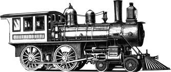

Turing-Express
01
J'aide les PME, bureaux d'études et structures publiques à fluidifier ce qui ralentit leurs équipes, avec des outils sur mesure qui accélèrent leurs process sans les perturber.
Turing-Express, c'est Lucas Sifoni : développeur indépendant depuis 2015. Basé à Cahors, j'interviens sur place dans le Lot, le sud-ouest et autour de Toulouse, et à distance partout ailleurs en France.
Alzo : conçu et développé de bout en bout
De 2022 à 2026, j'ai conçu et développé seul
Alzo, une base de
données et un accélérateur de réponses aux marchés
publics pour les architectes et bureaux d'études.
Alzo leur fait gagner des heures. Le produit est aujourd'hui porté par une société
dédiée que j'ai co-fondé.
Partir d'un besoin métier, créer un outil fiable
et le faire vivre dans la durée : c'est cette démarche que je propose pour votre activité.
Quelques accompagnements récents
-
Bureau Brut - fonderie typographique / 2026
Bureau Brut avait un site web générique, lent, et non adapté aux produits qu'il vendait. Nous avons conçu ensemble un site marchand qui comprend plus finement le métier d'une fonderie typographique et ses besoins de pricing, tout en étant extrêmement fluide. Résultat, une architecture prête à évoluer avec les ambitions de la fonderie, et simple à maintenir dans le temps.
-
Groupe industriel de 2000 personnes - BTP / 2025
Les entreprises de canalisation de ce groupe rencontraient des frictions lors de réponses techniques avancées aux marchés publics. J'ai conçu une solution sur mesure qui diminue le temps de création d'un dossier, augmente la réutilisation de fragments existants, s'intègre aux autres applications métier de leur SI, et élimine tout besoin de compétences graphiques côté utilisateur. Résultat : des dossiers plus cohérents, produits plus vite, avec plus de temps pour les réfléchir.
-
Lab212 - objets numériques interactifs / 2024-2026
Lab212 conçoit des installations numériques interactives exposées dans des musées et événements à travers le monde. Je les ai pris en charge sur l'intégralité de leur stack technique, du web au firmware embarqué, en construisant au passage des outils de pilotage dédiés. Résultat : des installations éphémères plus fiables, plus simples à modifier et à maintenir, pour qu'ils se concentrent sur leur métier : la création.
Comment on travaille ensemble
- Premier échange gratuit. On fait le tour de ce qui vous ralentit. Idéalement, je viens sur place. Si je ne suis pas la bonne personne pour vous, je vous le dis, et je sais qui vous recommander.
- Cadrage. Je reformule votre besoin, j'identifie ce qui a le plus de valeur, et je propose une première version réaliste pour avancer vite.
- Devis. Un périmètre clair. Je travaille au forfait, pas au temps, ce qui nous permet de nous concentrer sur la plus haute valeur immédiate.
- Communication. Je suis un interlocuteur actif et vous réponds rapidement. Si vous n'êtes pas disponible, vous avez dans votre boîte mail des points fréquents en vidéo pour prendre connaissance de l'avancée.
- Livraison itérative. Vous voyez l'outil avancer par étapes courtes et vous l'utilisez tôt. On ajuste avec votre retour terrain en cycles courts.
Parlons-en
Mes projets vont généralement de 5 000 à 60 000 € selon le périmètre, sur des durées de quelques semaines à un an. Si votre besoin est plus petit, je peux vous orienter ailleurs.
Le premier échange est gratuit et sans engagement.
Écrivez-moi, et je vous recontacte sous 48h.
Intéressé par la technique ? Elixir/BEAM, Phoenix, et Nerves pour l'embarqué. Efficace, résilient, économe. Détails techniques sur lucassifoni.info.